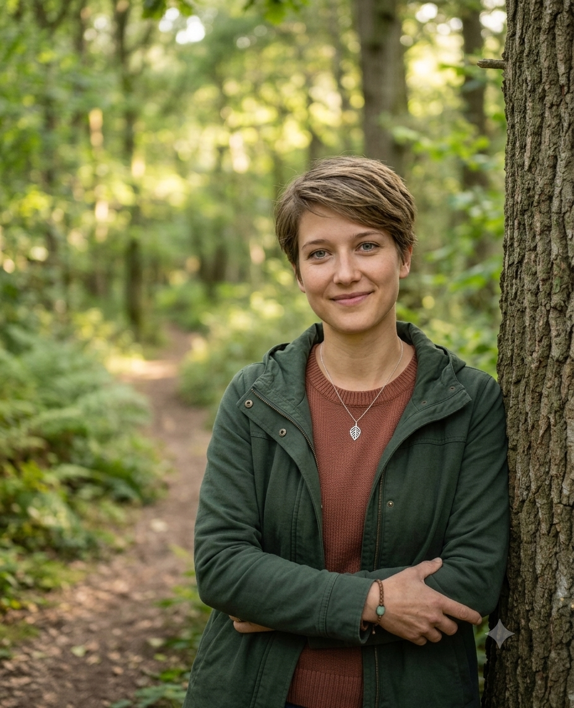

Viele Wege können ins Coaching führen. Ich bin einige davon gegangen.
Nach einem Bachelor in Sozialwissenschaften und Master in Kommunikationsforschung habe ich in sehr unterschiedlichen Berufsfeldern gearbeitet: Marktforschung, Datenbankmarketing, Produktentwicklung, Erwachsenenbildung. Erst operativ, dann im Consulting und schließlich als Dozentin. Immer in IT-nahen, modernen Arbeitswelten, immer mit Dauerdruck und permanentem Wandel. Ja, ich kenne recht viele Gesichter von "New Work".
Schon während des Studiums begann ich, nebenher als Fitness- und Gesundheitstrainerin zu freelancen. Im Studio, auf der Laufbahn, auf dem Bike. Ich merkte früh, dass das hier für mich wirklich zählte. Ich liebte es, Menschen zu befähigen, über sich selbst hinaus zu wachsen. Aus gelegentlichen Nebentätigkeiten wurde eine immer fokussiertere Selbstständigkeit.
Was ich mitbringe, ist mehr als Theorie
Dass ich mal als Coachin arbeiten würde, hatte ich mir selbst lange nicht zugetraut. Die Bewältigung einer eigenen Stress-Krise eröffnete mir neue Erfahrungen und Perspektiven. Die ehrliche Auseinandersetzung mit mir selbst brachte viel Klarheit. Ich weiß heute, was mich wirklich antreibt, was ich bewegen will – und handele auch danach.
Abseits der Arbeit
Privat bin ich gern unterwegs und in Bewegung. Beim Wandern, auf dem Gravelbike oder in fremden Kulturen finde ich Abstand zum Alltag und neue Inspiration. Den ruhigeren Gegenpol suche ich ebenso gern. Yoga und Meditation sind seit vielen Jahren fester Bestandteil meines Lebens.
Was ich daraus gemacht habe
Heute begleite ich Berufstätige und Unternehmen dabei, Gesundheitsprävention im Arbeitsalltag aktiv zu gestalten. So, dass Stress und Erschöpfung sinken und Energie wieder dorthin fließt, wo sie gebraucht wird: in Produktivität, Klarheit und echte Problemlösung.
Mit 8+ Jahren Erfahrung in modernen Arbeitswelten, diversen Ausbildungen in Gesundheitsmanagement, Resilienz und Coaching und praktischer Erfahrung als Gesundheitscoach kombiniere ich, was selten zusammen auftritt: fachliche Tiefe, systemisches Denken und echtes Verständnis für die Anforderungen moderner Arbeitswelten.
Seminare zu MBSR, Meditation, Selbstmanagement & Kommunikation ergänzen mein Profil.
Coaching mit K
Coaching und Training für Gesundheitsprävention im Arbeitskontext
Trainerin & Beraterin in der Erwachsenenbildung
IT-Schulungen / Schwerpunkt: Agilität und Projektmanagement
Agile Solution Consultant
Tiefenpsychologische Marktforschungsagentur / Facilitation von Design-Thinking-Workshops
Database Marketing-Manager
Telekommunikations-Unternehmen
Freiberufliches Gesundheitscoaching
Schwerpunkt: Stressprävention im Arbeitskontext
Freiberufliches Fitness- & Gesundheitstraining
Laufsport, Gesundheitstrampolin, Bootcamp, Rückentraining
Lernen wir uns kennen.
Das Erstgespräch ist kostenlos und unverbindlich. Wir schauen gemeinsam, ob mein Angebot zu dem passt, was Sie gerade brauchen.